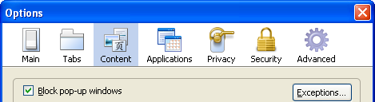
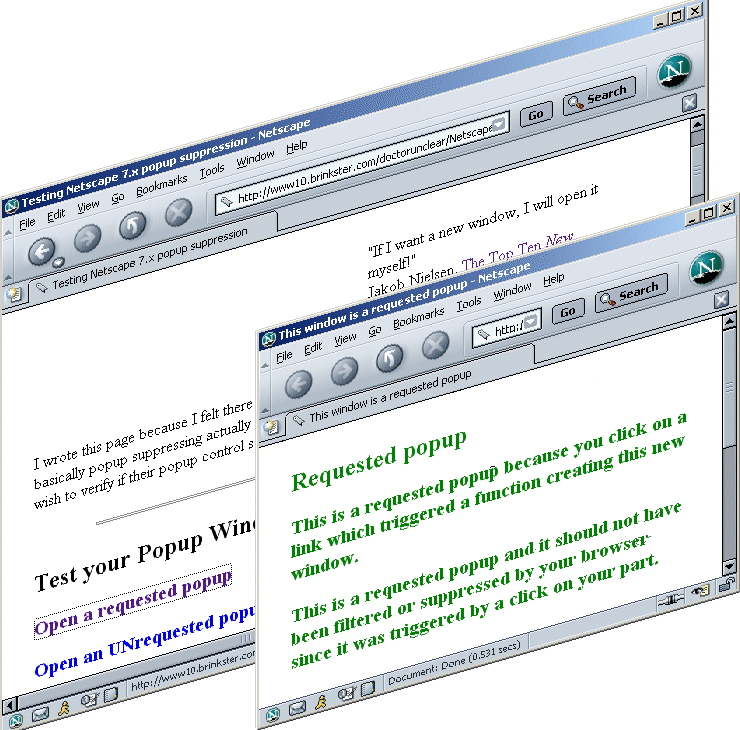
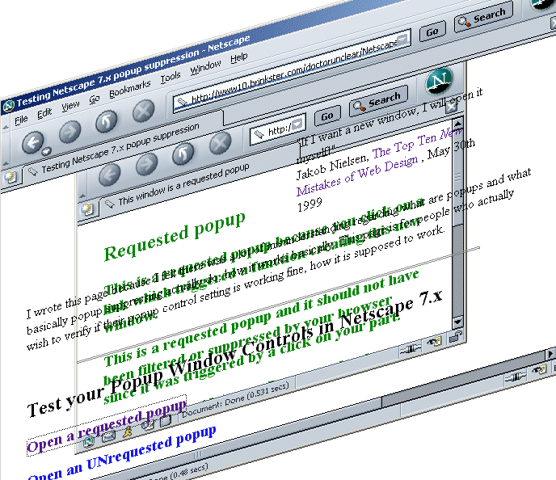

World Wide Web Consortium Accessibility Initiative regarding popups,
2000
If I want a new window, I will open it myself!
Preference setting to control popup windows in
Firefox

What are Popups? (according to Firefox)
Popup windows, or popups, are windows that appear automatically without your permission. They vary in size but usually don't cover the whole screen. Some popups open on top of the current Firefox window while others appear underneath Firefox (pop-unders).
Firefox allows you to control both popups and popunders through the Content panel in Options. (...)
Unfortunately other browsers, web designers and popup killer softwares define popups differently. They distinguish 2 types of popups: requested popups and unrequested popups. This distinction is more suitable, useful and to the point. The popups Firefox can block and suppress are unrequested popups via the setting.
Requested popups are windows created as a result of clicking a link or clicking a button. One mouse click, only one popup.
Unrequested popups are windows created automatically without any user interaction. Often, such unrequested popups have advertisement content. They often "pop up" as you arrive at a site or as you close a window. One mouse click, more than one popup.
| Equivalent setting in Tools/Options.../Content category/ |
Equivalent setting in about:config |
|---|---|
| Block pop-up windows | dom.disable_open_during_load set to true |
| Block pop-up windows | dom.disable_open_during_load set to false |
(...) some people can use Windows applications for years without understanding the concept of task switching. (When I point to the task bar and ask them what it's for, they can't tell me.) (...) spawning second browser windows can completely throw users off track because it removes the one thing they are sure how to use: the 'Back' button.(...) In another recent study, six out of 17 users had difficulty with multiple windows, and three of them required assistance to get back to the first window and continue the task.
(...) Users often don't notice that a new window has opened, especially if they are using a small monitor where the windows are maximized to fill up the screen. So a user who tries to return to the origin will be confused by a grayed out Back button.Jakob Nielsen, The Top Ten New Mistakes of Web Design: 2. Opening New Browser Windows, May 30, 1999
The HTML 4.01 target attribute is primarly used to target a specified frame but it can also target a new window or an already opened secondary window. Clicking a link which has a target attribute will no longer open another window (or an already opened window) if the user has checked
New pages should be opened in ...: This option controls whether links from other applications or from web pages which request to be opened in new windows are to be opened in new windows or in new tabs in the most recent window.
What this setting does is to allow the target attribute of a link to open a new window or to divert it in a new tab.
| Equivalent setting in Tools/Options.../Tabs category/New pages should be opened in: |
Equivalent instruction in about:config |
|---|---|
| a new window | browser.link.open_newwindow set to 2 |
| a new tab | browser.link.open_newwindow set to 3 (default) |
References:
If any target attribute refers to an unknown frame F, the user agent should create a new window and frame, assign the name F to the frame, and load the resource designated by the element in the new frame.
User agents may provide users with a mechanism to override the target attribute.
<a target="_blank" href="..."> opens a new, unnamed window.
<a target="example" href="..."> opens a new window named "example", provided that a window or frame by that name does not already exist.
(...) If no such frame was found in (3), create a new window and assign it the target name.
The biggest fault with pop-ups is that it takes the focus away from the main browser window, and this can be disconcerting. It presents general usability issues aside from accessibility. How often have you seen someone launch a pop-up and then inadvertently click back on the launcher window and thinking that nothing's happened, click the link again with nothing happening? Of course the window has opened but is now under the launcher window, and only moving down to the task-bar and selecting the window from there will solve this. (...) To address the issue of a window losing focus, you can use JavaScript to re-set the focus.
The Raise or lower windows setting allows web designers to bring popup windows on top of their own opener window or to bring the opener window on top of the popup window. The following images display both windowing situations. The javascript window methods used to bring on top or bring behind windows are focus( ) and blur( ). They are helpful to web designers; as an user you can give to webpage designers the ability to use these focus( ) and blur( ) methods on popup windows.
Here the popup window is on top, is in
front of the opener window. The focus( ) command is
the command web designers use to bring a window in front of all other
windows when it is behind or when it has been minimized.

While here, in the following image just below, the popup is
behind, is under the opener window. In
real web surfing and viewing conditions, the whole popup would not be
visible: here, the image of the opener is transparent. Most of the time,
the user does not notice that a popup "vanished" behind the opener.

Allowing webpages to be able to give focus to popup windows is recommendable because it will then make efficient use of resources on your computer. Instead of closing an already opened popup window and then re-creating that same popup window, it will simply bring it on top, bring it in front of other windows: therefore little cpu activity, very little RAM involved and very little time spent.
References:
Only open a new window in direct response to a user action, and think about how to make it clear to the user that their action will open a separate window.
In my view, one of the most irritating things for any computer program to do is to open a new window without the user having initiated an action. If you use window.open only in direct response to a user action, then the user will associate the action with the result.(...)
Do not use a pop-up only to display an advertisement.
An advertisement is unlikely to get a user's positive attention if it is not part of the primary site they are visiting.
Dave Massy,
Annoying and Intrusive Sites, Microsoft Corporation,
May 2001
Have you ever selected a link to look at a new page, then discovered that the "back" or "go back" or "previous page" control of your browser no longer seems to work? Surprise... the link you chose may have caused the new page to load in its own new window. If both pages are full-screen you may not know that you have two browser sessions on the go. The code to open the new page in its own window might look like this:
<A HREF="new-page.htm" TARGET="_blank">The Wonderful World of Sponge</A>
where TARGET=_blank tells the browser to spawn (or open) a new window for this page.
So, if your link spawns a new window, or causes another windows to "pop up" on your display, or move the focus of the system to a new FRAME or Window, then the nice thing to do is to tell the user that something like that will happen.

World Wide Web
Consortium Accessibility Initiative regarding popups,
2000
In all dominant browsers, using the <a target="_blank"> tag to force a link to open in a new window breaks the Back button. The new window does not retain the browser history of the previous window, so the "Back" button is disabled. This is incredibly confusing, even for me, and I've been using the web for 10 years. In 2002, it's amazing that people still do this.
Mark Pilgrim,
Dive
Into Accessibility: not opening new windows,
2002
Research shows that most users don't like to run more than one application at a time. In fact, many users are confused by multiple applications.
Windows User Experience team,
Microsoft
Windows User Experience Frequently Asked Questions: Why is the taskbar at
the bottom of the screen?,
March 2001
Using pop-up browser windows to display advertising on the Web has become so commonplace that there is now software that prevents these windows from opening. This software can have the unwanted side effect of preventing legitimate Web pages from being displayed, sometimes suppressing an entire digital media presentation.
Kevin Larkin, Jim Travis, Microsoft New Media Platforms Division,
Windows Media
Player 11 SDK: Advantages of Using HTMLView ,
January 2003 (Windows Media Player 9 SDK) and 2007
This concludes my presentation on popup windows
and Firefox settings.
I hope you now understand better how popups work and which Firefox
settings can do what and how for you.
Credits go to Michael (spam_ninja) for notifying me of some broken links.